It can be seen from the example in chapter I that an abbreviated code is much like a FORTRAN code. Indeed, nearly every statement of an abbreviated code is syntactically a FORTRAN statement. The reader is advised to become familiar with very basic FORTRAN coding, in particular the use of assignment statements, conditional statements, arithmetic expressions, and logical expressions. However, not all FORTRAN constructs can be used in an abbreviated code, an abbreviated code does not constitute a complete FORTRAN coded subroutine (this is not a disadvantage), and certain symbols used in an abbreviated code have (semantical) meaning different from standard FORTRAN meaning. For the purposes of developing user-supplied type subroutines for NONMEM, restrictions imposed by abbreviated code (on the use of certain FORTRAN constructs) are not many; usually, use of abbreviated code is quite adequate. The advantages to using an abbreviated code are considerable and outweigh some inconvenience which the restrictions impose.
Nonetheless, one may still want to use FORTRAN statements not allowed in abbreviated code. An escape mechanism is available. Verbatim code can be inserted into abbreviated code. This is FORTRAN code that is itself inserted without change, i.e. verbatim, into the FORTRAN subroutine generated by NM-TRAN. Because this code is essentially not processed by NM-TRAN, other than to copy it into the generated routine, symbolic differentiation is not used with this code. For this and other reasons, verbatim code should only be used by those who understand well how generated subroutines are structured.
The purpose of an abbreviated code is to specify the computation of special quantities called the left-hand quantities
These quantities are symbolized by reserved variables or arrays elements. There are mandatory left-hand quantities and optional left-hand quantities. For each mandatory (optional) left-hand quantity, there must (may) exist some assignment or conditional assignment statement in the abbreviated code that defines the symbol used for the quantity. In the case of an abbreviated code for PRED there is one mandatory left-hand quantity, symbolized by the reserved variable Y, and described below. There are other optional left-hand quantities symbolized by reserved array elements COM(n), which play a minor role; see section E.3.
There are other special quantities called right-hand quantities which can be used in the computation, and these are also symbolized by reserved variables or array elements. The symbols are used in abbreviated code as though they are already defined. These quantities are: the data items of a data record, symbolized by the variables given by the labels and synonyms specified in the $INPUT record; values of the
parameters, symbolized by the array elements
THETA(1), THETA(2), etc.; values of
 and
and
 variables, symbolized by the array elements ETA(1),
ETA(2), ..., and EPS(1), EPS(2),
..., ; others where noted.
variables, symbolized by the array elements ETA(1),
ETA(2), ..., and EPS(1), EPS(2),
..., ; others where noted.
Generated PRED subroutines contain the declaration
USE NMPRD_REAL,ONLY: ETA,EPS
so that ETA and EPS values may be obtained from NONMEM’s GETETA, SIMETA, and SIMEPS subroutines, as appropriate (for some discussion of SIMETA, see section III.B.13).
The symbols can be used in the right-hands of assignment statements and, with some restrictions for ETA’s, EPS’s, and all other random variables (see below), they can also be used in the right-hands of conditional assignment statements and in the conditional expressions of conditional statements. Except where noted, a symbol for a left-hand quantity, once it has been has been defined in abbreviated code, can also be used similarly. For example, Y may be used on the right, e.g. LOGY=LOG(Y). Also, variables other than left-hand quantities can be defined by abbreviated code and used similarly. On the other hand, a variable defined by abbreviated code cannot be used as a label in a $INPUT record. This means that quantities cannot be stored into the data record using abbreviated code (see though, section I).
The array elements
ETA(1), ETA(2), ..., and EPS(1),
EPS(2), ..., can also be regarded as symbolizing
the
 and
and
 random variables, not simply values of these
variables. For practical purposes, this means that if
another variable A is defined in abbreviated code
in terms of these elements, then A can be viewed as
a function of the
random variables, not simply values of these
variables. For practical purposes, this means that if
another variable A is defined in abbreviated code
in terms of these elements, then A can be viewed as
a function of the
 and
and
 variables, and NM-TRAN generates code to compute various
derivatives of A with respect to the
variables, and NM-TRAN generates code to compute various
derivatives of A with respect to the
 and
and
 variables. These derivatives are called the
variables. These derivatives are called the
 - and
- and
 -derivatives
-derivatives
The variable A itself
can be regarded as symbolizing a random variable, so that if
it is used to define yet another variable B, the
 - and
- and
 -derivatives of B are also computed, and so on. In
general, in addition to the
-derivatives of B are also computed, and so on. In
general, in addition to the
 and
and
 random variables, any variable or array element whose value
depends on the value of an
random variables, any variable or array element whose value
depends on the value of an
 or
or
 variable is itself regarded as a random variable.†
variable is itself regarded as a random variable.†
----------
†Any variable
A that can be regarded as a random variable, is
called a true-value variable in the first edition of
this guide, in certain other NONMEM Users Guides, and in
NM-TRAN error messages. This is because the variable can
also be regarded as symbolizing the true, albeit unknown,
value of the random variable that gives rise to the data at
hand.
----------
In the example of chapter I, all variables defined with the string of assignment statements, i.e. the variables KE to Y, are random variables.
The variable Y is (typically) an example of a random variable. If PRED is called with a data record containing an actual observation, Y symbolizes the value of the observation under the statistical model. If PRED is called with a data record with a missing dependent variable data item equal to 1, Y symbolizes a prediction. This prediction, however, is obtainable from the same code used to give the model-based value for the observation, and one need not (although one may) give different code depending on the value of the MDV data item. With odd-type data, Y is a conditional likelihood for the observation. See J.1. "Indicator Variables, Random Variables and Recursion Code" for an example of odd-type (categorical) data.
A random variable may be used in the right or left-hand of a conditional assignment statement, i.e., it may be defined conditionally. A random variable may be used in the conditional expression of a conditional statement, but in this case care should be taken that either the statement is executed only during the Simulation Step (see section D), or that as a result of the expression being true, the EXIT statement is executed (see section G.2). A random variable may not be defined in a nested conditional assignment statement. An alternative way to code this type of computation is illustrated in section IV.K.1 Random Variables and Recursion code below.
An abbreviated code is part of an NM-TRAN control record. For example, an abbreviated code for PRED is a part of a $PRED record. The statements comprising the code are contained in one or more continuation records of the control record. However, only one statement can be contained in any one record. A $PRED record along with all its continuation records is called a $PRED block
NM-TRAN comments can be included in an abbreviated code in the usual way, e.g.
Y=THETA(1)*WT+THETA(2)*AGE+ETA(1) ;linear regression model
Using symbols
 ’s and
’s and
 ’s, and their counterparts in abbreviated code, the
ETA’s and EPS’s, can be
confusing. If the data are population data, intraindividual
effects are represented by
’s, and their counterparts in abbreviated code, the
ETA’s and EPS’s, can be
confusing. If the data are population data, intraindividual
effects are represented by
 variables, but with single-subject data, they are
represented by
variables, but with single-subject data, they are
represented by
 variables; see section II.C.4. NM-TRAN abbreviated code
offers a way to alleviate this confusion. With
single-subject data the array element
ERR(n) may be used instead of
ETA(n); using one has the same effect as
using the other. With population data the array element
ERR(n) may be used instead of
EPS(n). Therefore, in either case one can
be safe in always using the symbols ERR(n)
to represent the random intraindividual effects.
variables; see section II.C.4. NM-TRAN abbreviated code
offers a way to alleviate this confusion. With
single-subject data the array element
ERR(n) may be used instead of
ETA(n); using one has the same effect as
using the other. With population data the array element
ERR(n) may be used instead of
EPS(n). Therefore, in either case one can
be safe in always using the symbols ERR(n)
to represent the random intraindividual effects.
Each statement may be placed
anywhere within its containing record, one statement per
record.
FORTRAN 95 continuation lines are permitted. The character
& should be placed at the end of the line to be
continued. For example, the following two code fragments are
identical:
CL=EXP(THETA(1)*WERT+EPS(1)) CL=EXP(THETA(1)*WERT & +EPS(1))
Comments may be included on any line after the semicolon character ";". An exception is the FORTRAN continuation character &, which may not be followed by a comment.
No statement types other than assignment, IF, THEN, ELSE, ELSEIF, ENDIF, DO WHILE, ENDDO, CALL, WRITE, PRINT, RETURN, OPEN, CLOSE, REWIND. e.g., no GOTO, READ, FORMAT.
For use of WRITE, PRINT, OPEN, CLOSE, and REWIND statements in abbreviated code, see Guide VIII and on-line help.
A special statement type, EXIT, is permitted. Both lower and upper case may be used for all user-defined and reserved words. FORTRAN statement numbers may not be used.
All variables or array elements are treated as having type DOUBLE PRECISION i.e., as double precision floating-point numbers, except where noted. Any valid FORTRAN numerical constant can be used, but if it is an integer constant, it is treated as a DOUBLE PRECISION constant.
All variable names consist of 1-20 letters (A-Z), numerals (0-9), and the character ’_’, beginning with a letter. (The length 20 is specified by constant SD in SIZES).
Names of array elements which are left- or right-hand quantities can appear. Variable names of exactly six characters, starting with A, B, or C and followed with various combinations of five of the digits 0-9 (e.g. B00003), and the variable name BBBBBB, are reserved for internal use and may not be used in an abbreviated code; see section F.
Use of the exponential operator ** is allowed. However, as with FORTRAN, it is more efficient to use the multiplication operator * when the exponent is a small ( 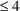 ) integer. Although when B=0 and P>0 the computation R=B**P is mathematically defined and is 0, some floating point processors fail with a floating point error. Powers are computed as follows (NONMEM V):
Q=0 IF (B.EQ.0) Q=1 R=(1-Q)*(B+Q)**P
FORTRAN functions LOG (natural log), LOG10, EXP, SQRT, SIN, COS, TAN, ASIN, ACOS, ATAN, ABS, INT, MIN, MAX, MOD may be used. The NONMEM functions PHI and GAMLN may be used.
Functions LOG, LOG10, EXP, SQRT,
SIN, COS, TAN, ASIN, ACOS, ATAN, ABS, GAMLN may have random
variable arguments and the partial derivatives are computed.
Note that the partial derivative of ABS(X) with respect to
 is mathematically undefined at X=0. We are arbitrarily
defining it to be
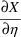
. If the value of X affects the value of the objective
function, X must always be either positive or negative. If
the argument of GAMLN is a random variable, it must always
be positive. Function PHI may have a random argument but no
partial derivates are computed.
is mathematically undefined at X=0. We are arbitrarily
defining it to be
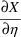
. If the value of X affects the value of the objective
function, X must always be either positive or negative. If
the argument of GAMLN is a random variable, it must always
be positive. Function PHI may have a random argument but no
partial derivates are computed.
The INT, MOD, MIN, and MAX functions produce discontinuous results. No partial derivatives are computed. If they are used outside of a simulation block and the function value affects the value of the objective function, then an error in the NONMEM Estimation Step will probably occur.
With NONMEM 7.4, routines are available that protect against domain violations, divide by zero, and floating point overflows. Each of these routines start with the letter P, followed by the name of the mathematical operation they are to perform. For example, PLOG is the protective code routine that performs the LOG operation. The protect functions and the $ABBREVIATED PROTECT record are discussed below in section IV.J.6. PROTECT functions.
User-written functions FUNCA, FUNCB and FUNCC (called abbreviated functions) may be used as right-hand quantities in abbreviated codes. Such a function may have a single argument. However, it may be a vector. A function may depend on arguments which may be random variables, in which case the function too becomes a random variable.
Left-hand quantities VECTRA(n), VECTRB(n), VECTRC(n) may be used, and these become elements of reserved vectors VECTRA, VECTRB, VECTRC. A subscript n must be a positive integer constant. Any reserved vector may be used with any FUNC, e.g. X=FUNCA(VECTRB).
The code for the functions must be written by the user in FORTRAN (See Guide VIII ABBREVIATED FUNCTION Help Item.) The code must be in a file included using the $SUBROUTINE OTHER option, as discussed in Chapter III.B.6.
With NONMEM 7.3, reserved function names are FUNCA through FUNCI.
With NONMEM 7.4, reserved function names are FUNCA through FUNCZ. Reserved vector names are VECTRA through VECTRZ.
With NONMEM 7.4, the $ABBREVIATED FUNCTION and $ABBREVIATED VECTOR records may be used to declare user-defined functions and vectors. See section IV.J.7, below
With NONMEM 7, the $ABBREVIATED
DECLARE record may be used to declare user-defined arrays
and vectors, which may be used for random-quantities.
INTEGER variables and DOWHILE variables (which are also
integer) may be defined and may be used for looping. Integer
variables and integer expressions may be used as as
subscripts for THETA’s and user-defined arrays.
Integer variables and integer expressions may be used as
subscripts for other arrays, e.g., random variables ETA(I),
but only in a WRITE or PRINT statement. Declared variables
are global, i.e., are defined in all blocks of abbreviated
code except $MIX. Declared variables are automatically
initialized to 0.
Here is an example.
$ABBR DECLARE INTEGER I, REAL X(10) $PRED I=1 X(I)=THETA(I)
For more examples, see IV.IV.J.3. The DOWHILE Statement
Previous restrictions on nested parentheses and conditional definition of random variables are removed. Specifically:
Parentheses may be nested, e.g.,
A=(THETA(1)+(THETA(2)+C)*2)/E
Parentheses may be used within logical expressions, e.g.,
IF (Q.EQ.(R+C)/D) A=3
Parentheses may be used within an expression for an argument of a FORTRAN library function, e.g.,
A=EXP(-(THETA(1)+C)*TIME)
Conditional statements may be nested if random variables are not defined. The default is 10 levels of nested IF’s. This may be increased. E.g.,
A=THETA(3) IF (Q.EQ.1) THEN A=THETA(1) IF (R.NE.B) A=A+THETA(2)
ENDIF
An ELSE IF clause may be used.
Random variables may appear in the right and left-hands of conditional assignment statements, e.g.,
IF (Q.EQ.1) A=THETA(1)*(1+ETA(1)) IF (Q.EQ.0) A=THETA(2)*(1+ETA(1))
A random variable may be redefined, e.g.,
A=TVV+TVV*ETA(2) A=A+THETA(4)
A variable on the left-hand of an assignment statement may also be used on the right-hand even if the assignment redefines the variable to be a random variable, e.g.,
A=THETA(1) A=A*EXP(ETA(1))
The logical operators .NOT.,
.AND., .OR., may not be used within parentheses.
Here is an example of how to write code to avoid this
restriction. (See Guide VIII and on-line help for
ignore/accept example.)
Suppose ACC is a variable that is to have values 0/1
depending on the value of A and B. The desired code is:
ACC=0 IF ((A == 1.OR.A == 2).AND.B<100) ACC=1
There are two workarounds. One is to clear the parentheses:
ACC=0 IF (A==1.AND.B<100.OR.A==2.AND.B<100) ACC=1
(this is always possible, no matter how complicted the
conditional expression).
The second is to use several statements. There are may ways
to do this. In the following, the .AND. of multiple
conditions is false if any of the conditions is false.
ACC=1 IF (A.NE.1.AND.A.NE.2) ACC=0 IF (B.GE.100) ACC=0 An IF-ENDIF block must be completely within a contiguous block of the NM-TRAN record containing the abbreviated code.
|
invalid |
$PRED IF (A.EQ.B) THEN
Y=W1
$PRED
ELSE
Y=W2
ENDIF
|
valid |
$PRED IF (A.EQ.B) THEN
Y=W1
ELSE
Y=W2
ENDIF
There are further restrictions specific to each type of abbreviated code. For an abbreviated code for PRED, certain variables which occur as arguments to the PRED subroutine may not be used. These are DATREC, INDXS, G, and H. The variable F can be used; it has no special meaning in the code.
Extensions specific to each type of abbreviated code can exist. In general, any feature described in this section for $PRED may be used with some or all other blocks, such as PREDPP blocks $PK and $ERROR. Exceptions are noted when appropriate. For an abbreviated code for PRED, certain reserved variables may be used to symbolize some special right-hand quantities. These variables, ICALL and NEWIND, occur as arguments to the generated PRED subroutine. They are now described.
The variable ICALL has the value 0 if the call to PRED is the first call to PRED in the run (the run initialization call). It has the value 1 if the call to PRED is the first call to PRED in the problem or superproblem (a problem initialization call). It has the value 3 if the call to PRED is the last call to PRED in the problem (a problem finalization call). It has the value 2 if the call to PRED is a regular call during data analysis, and the value 4 if the call is a regular call during data simulation. It has the value 5 if the call to PRED occurs when expectations are being computed (the marginal data item MRG_ has a non-zero value for some records). It has the value 6 if the call to PRED occurs when raw data averages are being computed (the raw-data-average data item RAW_ has a non-zero value for some records).
Abbreviated code may test the value of ICALL. Such code defines specific kinds of blocks. For example:
IF (ICALL==0) THEN Run Initialization block
ENDIF IF (ICALL==1) THEN
Problem Initialization block
ENDIF IF (ICALL==2) THEN
Data Analysis block
ENDIF IF (ICALL==3) THEN
Problem and Run Finalization block
ENDIF IF (ICALL==4) THEN
Simulation block
ENDIF IF (ICALL==5) THEN
Expectation block
ENDIF IF (ICALL==6) THEN
Data Average block
ENDIF
The specific rules for each type of block are described in the help NONMEM Users Guide VIII and on-line help. In particular, for ICALL 0, 1, 3 blocks, see help item for Initialization-Finalization block.
At initialization and finalization calls the data items occuring as right-hand quantities are those of the first data record. At the run initialization call the THETA’s are 0. At a problem initialization (finalization) call, the THETA’s are the initial (final) estimates. During an initialization (finalization) call, the ETA’s are 0 (0, or conditional estimates for the first individual if conditional estimates have been requested).
The variable NEWIND has value 0 if the data record is the first record of the data set. It has the value 1 for the first record of the data set if the THETA value does not differ from value at last call with this record, and PRED is non-recursive (see disucussion in III.III.B.15), or, more usually, if the data record is the first data record of the second or subsequent individual record. It has the value 2 if the data record is the second or subsequent data record of an individual record. With single-subject data individual records are defined in such a way that data records are contained in a number of different individual records; see section II.C.4.1. Therefore, except when the data record is the first data record of the data set and the value of NEWIND=0, the value of NEWIND can be 1 or 2.
Certain reserved variables listed in NONMEM MODULEs (and available to any subroutine for which an abbreviated code may be given) may be used in abbreviated code to symbolize some special right-hand quantitites. Some of these are now described. They are intended for use in advanced NONMEM applications. This section may be ignored by beginning NONMEM users. Some of these variables are associated with a data record or individual record. They change values with calls to NONMEM PASS routine. This is discussed in section IV.J.2, below. See help item for variables in modules.
These are right-hand variables that can be used when a mixture model is used. With a mixture model there are one or more submodels that can be used to describe an individual’s data. PRED (PK, ERROR, etc. if PREDPP is used) must be able to compute its outputs under each of these submodels. However, with each call to the routine, the outputs are computed only under one submodel. With data from a given individual’s record, and when ICALL=2 or 4, MIXNUM is the number of the submodel of the mixture that should be used to obtain the outputs. It is an input to PRED (or PREDPP) set by NONMEM. The submodels are enumerated 1, 2, ..., m, where m is the number of possible submodels that can be used to describe the individual’s data, a number returned in an argument of the routine MIX; see Guide VI, section III.L.2. The number m can vary between individual records. When ICALL=1 or 3, MIXNUM is 1.
The variable MIXEST can be used when a mixture model is used. With data from a given individual’s record, and when ICALL=3, MIXEST is the number of the submodel of the mixture that "best" describes the individual’s data. It is an output (result) or consequence from the estimation set by NONMEM and changes value with calls to PASS. The best submodel is selected according to a Bayesian computation, conditional on the individual’s data and on the final estimates of the population parameters. When ICALL=1, 2, or 4, MIXEST is 1.
MIXP is an array variable. They are the mixture probabilities P(i) computed by subroutine MIX or by the $MIX block of abbreviated code. (In the $MIX block, MIXP is simply the P array.)
See the $MIX block, below.
The variable COMACT can be used to identify those calls to the routine with which PRED-defined items (see section F) are obtained by NONMEM for the purpose of displaying these items in tables and scatterplots. COMACT is 1 or 2 or 3 with such calls; otherwise it is 0.
When COMACT is non-0, NONMEM is making a copying pass. The data records are being passed to PRED for the purpose of computing values of variables which will be copied from NMPRD4 for tables and scatterplots. NONMEM only makes a copying pass when PRED-defined items are listed in $TABLE or $SCATTER records.
Abbreviated code that tests COMACT defines a copying block, e.g.,
IF (COMACT>0) THEN
Copying block
ENDIF
There are (up to) three sets of calls with the data records of an individual record. With ETA’s set to 0, there is a first set of calls with COMACT=1. If conditional estimates are requested, then with ETA’s set to these estimates, there is a second set of calls with COMACT=2. If conditional (nonparametric) estimates of etas are requested, there is a third set of calls with COMACT=3.
If a mixture model is used, with each value of MIXNUM (see section E.1) there are more than two sets of calls. With ETA’s set to 0, there is a set of calls for each distinct value of MIXNUM with COMACT=1. If conditional estimates are requested, then with ETA’s set to these estimates, there is a set of calls for each distinct value of MIXNUM with COMACT=2. Note that nonparametric estimates cannot be obtained with a mixture model.
PRED-defined items are stored in variables defined in PRED (PK or ERROR if PREDPP is used) (see section F). Normally, these items may change from call to call. That is, at one call an item is computed and stored in a variable V; then it is available in V at the start of the subsequent call; at that call, though, another item may be computed and stored in V. Therefore, if an item is computed at a call 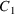 with a particular data record (of the individual record) when COMACT=1, it may no longer be available at a call 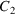 with the same data record when COMACT=2, due to there being (in general) multiple calls to PRED (PK and ERROR) with different data records of the individual record between and 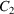 . There are, however, situations where it is desired that the item be available at . This problem is solved by making a special use of NONMEM MODULE NMPRD4.
Items may change from call to call whether they are stored in a locally defined variable or in a globally defined variable listed in NMPRD4 (see sections III.B.16-17). However, an initial section of NMPRD4 can be identified to NONMEM as the save region All items stored in this region at a call to PRED (PK or ERROR) with a particular data record when COMACT=1 are available at a call with the same data record when COMACT=2. In fact, with mixture models in mind, if at any call to PRED (PK or ERROR) with a particular data record (when COMACT=1 or 2 and MIXNUM has any value), an item is stored in a variable listed in the save region, then the item is available at any subsequent call with the same data record (when COMACT=1 or 2 and MIXNUM has any value).
The save region of NMPRD4 is
comprised of the first
 positions, where
positions, where
 is the integer given with the COMSAV option on the
$ABBREVIATED record (see section III.B.7). If the option is
omitted, or if
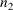
is 0, there is no save region.
is the integer given with the COMSAV option on the
$ABBREVIATED record (see section III.B.7). If the option is
omitted, or if
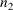
is 0, there is no save region.
PRED-defined variables that are defined in a copying block are referred to as implicit SAVE variables. Another way to store an item in a variable listed in the save region is described in the next section.
There are additional left- and right-hand quantities symbolized by the array elements COM(n)
The nth element refers to the
nth item stored in MODULE NMPRD4. These quantities are
useful when a user-supplied routine has stored items in this
MODULE, and these items are to be used by abbreviated code.
Abbreviated code may also store items in reserved COM
elements. Typically, the first
 positions of NMPRD4 are reserved to allow user-supplied
routines to store PRED-defined items in these positions so
that they may be displayed in tables and scatterplots (see
section III.B.16). The integer n must not exceed the integer
positions of NMPRD4 are reserved to allow user-supplied
routines to store PRED-defined items in these positions so
that they may be displayed in tables and scatterplots (see
section III.B.16). The integer n must not exceed the integer
 , where
, where
 is the integer specified with the COMRES option on
the $ABBREVIATED record (see section III.B.7). Even if the
computation of COM(n) depends on
is the integer specified with the COMRES option on
the $ABBREVIATED record (see section III.B.7). Even if the
computation of COM(n) depends on
 ’s or
’s or
 ’s, COM(n) is not regarded as a
random variable. That is,
’s, COM(n) is not regarded as a
random variable. That is,
 - and
- and
 -derivatives of COM(n) are always 0, but
never actually computed.
-derivatives of COM(n) are always 0, but
never actually computed.
PRED-defined items defined by
abbreviated code can also be stored in the first
 positions, since the array element COM(n)
can function as an optional left-hand quantity. This can
facilitate the communication in both directions between a
user-supplied routine and a routine specified by abbreviated
code. It can even be used to allow two-way communication
between two abbreviated codes. (Regular variables used on
the left in one abbreviated code cannot be used on the left
in another abbreviated code, as long as variables are listed
in NMPRD4, but see sections H and III.B.7.) Another use of
these left-hand quantities is to allow abbreviated code to
specify that an item be stored in the save region of NMPRD4
(see section E.2). COM(i) variables that are defined in a
copying block are referred to as explicit SAVE
variables. Implicit and explicit SAVE variables cannot
both appear in abbreviated code.
positions, since the array element COM(n)
can function as an optional left-hand quantity. This can
facilitate the communication in both directions between a
user-supplied routine and a routine specified by abbreviated
code. It can even be used to allow two-way communication
between two abbreviated codes. (Regular variables used on
the left in one abbreviated code cannot be used on the left
in another abbreviated code, as long as variables are listed
in NMPRD4, but see sections H and III.B.7.) Another use of
these left-hand quantities is to allow abbreviated code to
specify that an item be stored in the save region of NMPRD4
(see section E.2). COM(i) variables that are defined in a
copying block are referred to as explicit SAVE
variables. Implicit and explicit SAVE variables cannot
both appear in abbreviated code.
The rule given above still
holds: COM(n) is not regarded as a
random variable. This means that while
COM(n) may have a value that depends on
 ’s and
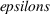
’s, the
’s and
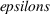
’s, the
 - and
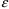
-derivatives of COM(n) are always 0. This
in turn implies that abbreviated code cannot define a random
variable to be listed in the save region of NMPRD4.
- and
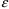
-derivatives of COM(n) are always 0. This
in turn implies that abbreviated code cannot define a random
variable to be listed in the save region of NMPRD4.
Counter variables are right-hand variables that NONMEM sets so that user code can determine where NONMEM is in a problem.
NIREC, NDREC (nmvi) NPROB, IPROB (nmv) S1NUM, S2NUM, S1NIT, S2NIT, S1IT, S2IT (nmv) NREP, IREP (nmv) LIREC, NINDR , INDR1, INDR2 (nmvi)
Counters include (in the order
above):
record counters;
problem iteration counters;
super-problem iteration counters;
simulation repetition counters;
number of data records in the individual record; number of
individual records in the data set containing an observation
record, and the indices of the first and last such
individual records.
Some of these variables may be used as right-hand quantities in abbreviated code for certain blocks of code, e.g., only in initialization/finalization blocks. They change values if appropriate during a pass thru the data set, e.g., during initialization/finalization.
The following lists some of the other reserved variables. Variables that can be used on the left-hand provide information to NONMEM. Variables that can be used on the right-hand are set by NONMEM.
MSEC, IFIRSTEM (right-hand) (nmiv, nm72)
These are the "partial
derivative indicator" variables set by NONMEM. NONMEM
does not always require that first or second
 - and
- and
 -derivatives be computed. MSEC=1 when NONMEM is expecting
second-partial eta-derivatives with the current call to
PRED; 0 otherwise. IFIRSTEM=1 when NONMEM is expecting
first-partial eta-derivatives with the current call to PRED;
0 otherwise. These derivatives are almost always needed by
classical NONMEM methods with population data. However,
NONMEM does not always use these derivatives for the newer
Bayesian methods. Generated code in FSUBS copies IFIRSTEM to
a local variable, FIRSTEM. This allows the abbreviated code
to set FIRSTEM=1 so that first derivatives are computed in
unusual circumstances.
-derivatives be computed. MSEC=1 when NONMEM is expecting
second-partial eta-derivatives with the current call to
PRED; 0 otherwise. IFIRSTEM=1 when NONMEM is expecting
first-partial eta-derivatives with the current call to PRED;
0 otherwise. These derivatives are almost always needed by
classical NONMEM methods with population data. However,
NONMEM does not always use these derivatives for the newer
Bayesian methods. Generated code in FSUBS copies IFIRSTEM to
a local variable, FIRSTEM. This allows the abbreviated code
to set FIRSTEM=1 so that first derivatives are computed in
unusual circumstances.
(See Turning on First Derivative Assessments for EM/Bayes
Analysis(NM72) in NONMEM 7 Guide.)
Note that NM-TRAN rearranges the order of statements in FSUBS. Statements that compute second-partial eta-derivatives are collected together into blocks of second derivative code to be executed only with MSEC is 1. Starting with NONMEM 7.2, statements that compute first-partial eta-derivatives are collected together into blocks of first derivative code to be executed only with FIRSTEM is 1. Option NOFASTDER of the $ABBREVIATED record prevents NM-TRAN from doing this and restores the order of statements in FSUBS to what it was in previous versions.
NEWL2 (right-hand) (nmv)
NEWL2 = 1 if the data record is
the first of an L2 record;
NEWL2 = 2 otherwise.
NEWL2 may be used as a right-hand quantity in $PRED and
$ERROR blocks, and in an $INFN block in conjunction with
PASS. It changes with calls to PASS.
OBJECT (right-hand) (nmv)
The final value of the objective function. This value should only be used at ICALL = 3 (finalization block) in $INFN or $PRED.
IERE and IERC (right-hand) (nmv) The return codes from the Estimation Step and Covariance Steps, respectively. Values of 0 indicate normal termination. They should only be used at ICALL = 3 (finalization block) in $INFN or $PRED.
RPTI,RPTO,RPTON,PRDFL (left-hand) (nmvi)
The "Repetiton Variables" may be used to mark a data record as a repetition base when NONMEM’s repetition feature is used, as an alternative to use of the RPT_ data item.
With Version VI, variables RPTI, RPTO, RPTON and PRDFL can be set and/or tested, thus allowing a subsequence of data records to be repeatedly passed to PRED multiple times before the next data record following the last record of the subsequence is passed. Subsequences can be nested. This "repetition feature" allows e.g. kinetics to be computed by a convolution integral. The user can exercise control over which pass through a sequence it is, during which the output from PRED with a given data record will be used by NONMEM. This "PRED control" allows e.g. PRED output with a given record to involve computations over subsequent, as well as prior, records. (See the NMPR10 Help Item and the Repetition 1 and Repetition 2 examples.)
YLO, YUP (left-hand) (nmvi)
With a given data record, either of the limits YLO or YUP may be set so that during the analysis an interval is defined in which (or outside of which) an observation is conditioned to exist. May be set in $PRED and $ERROR.
PR_Y (right-hand) (nmvi)
PR_Y is the estimated probability that an observation will fall within (or outside) the interval. PR_Y may be used as a right-hand quantity in abbreviated code for $PRED, $PK, $ERROR, and $INFN blocks.
CTLO, CTUP (left-hand) (nmvi)
An observation may be the event that the value of a normally distrib- uted variable falls in a given interval. CTLO is the lower endpoint of the interval. CTUP is the upper endpoint of the interval. May be set in $PRED or $ERROR.
PR_CT (right-hand) (nmvi)
PR_CT is the estimated probability that an observation will be of the category in question. PR_CT may be used as a right-hand quantity in abbreviated code for $PRED, $PK, $ERROR, and $INFN blocks.
F_FLAG (left-hand) (nmvi)
The data may include both population data and odd-type data. PRED may compute both predictions and likelihoods. F_FLAG=0 indicates that Y or F is being set to a "prediction" of the observation. F_FLAG=1 (or 2) indicates that Y or F is being set to a likelihood (or -2 log likelihood) value for this particular observation. May be set in $PRED and $ERROR. See J.1. "Indicator Variables, Random Variables and Recursion Code" for an example.
IIDX, CNTID (right-hand) (nmvi)
These array variables contain values of the ID data item and individual contributions to the objective function. The values are in data-set order. With NONMEM 7, the additional output file root.phi contains the same information.
SKIP_ (left-hand) (nmvi)
SKIP_ is used to control premature termination of a problem (with subproblems), superproblem or superproblem iteration. In a finalization block of abbreviated code one may set SKIP_ and/or use the following phrases:
END PROBLEM (same as
SKIP_=1)
END SECOND-LEVEL SUPERPROBLEM (same as SKIP_=3)
END FIRST-LEVEL SUPERPROBLEM (same as SKIP_=5)
END SECOND-LEVEL SUPERPROBLEM ITERATION (same as
SKIP_=2)
END FIRST-LEVEL SUPERPROBLEM ITERATION (same as
SKIP_=4)
TEMPLT (right-hand) (nmvi)
This right-hand array is used in two different contexts.
At ICALL=6, the template data record is stored in TEMPLT and may be used on the right in a data average block.
When MIX is called, the first data record of the individual record is stored in TEMPLT and may be used in $MIX.
Items of the template record may be referred to by position or by label, e.g., TEMPLT(1) or TEMPLT(ID).
OMEGA(n,m), SIGMA(n,m) (right-hand) (nmvi)
Current values of OMEGA and SIGMA in $PRED, $PK, $ERROR at ICALL 2. In $INFN and $PRED at the run initialization call, they are 0’s. At a problem initialization (finalization) call, they are the initial (final) estimates. May specify individual elements or the entire array. In the case of OMEGA and SIGMA, may also specify BLOCK or DIAG.
SETHET(n), SEOMEG(n,m), SESIGM(n,m), SETHETR(n) (right-hand) (nmvi)
The standard errors of the estimates of THETA, OMEGA, and SIGMA. In $INFN and $PRED, at ICALL 3. May specify individual elements or the entire array. If $THETAR is used, SETHET contains standard error of internal values, and SETHETR contains standard errors of reported values. If $THETAR record not used, SETHET=SETHETR. In the case of OMEGA and SIGMA, may also specify BLOCK or DIAG.
THSIMP, THSIMPR OMSIMP, SGSIMP (right-hand) (nmvi)
These are the values of THETA, THETAR, OMEGA and SIGMA that are produced during a Simulation Step using the user-supplied routine PRIOR. (THETA=THETAR if $THETAR record not used.) May be used in $PK, $ERROR, $INFN and $PRED blocks. After being set during the Simulation Step, they remain available during problem finalization (i.e., ICALL=3).
DEN_, CDEN_(i) (right-hand) (nmvi)
The nonparametric density and the marginal cumulative value for the ith. eta. Values are computed by NONMEM when the Nonparametric step is performed and marginal cumulatives are requested ($NONPARAMETRIC MARGINALS). Values are available during the pass with COMACT=2 and (if PASS is called) at ICALL=3. These variables may be used as right-hand quantities in abbreviated code blocks $PK, $ERROR, $INFN and $PRED.
PRED_, RES_, WRES_ (right-hand) (nmvi)
These values may be used when ICALL is 3 ($PRED and $INFN) They have the same values as PRED, RES, WRES in NONMEM outputs. They change with calls to PASS. With NONMEM 7, all the special diagnostic items from Chapter III may be used in this manner.
CORRL2 (left-hand) (nm7)
CORRL2 is a reserved variable used for modelling correlation across residual variables (i.e., within L2 records.) May be set in $ERROR or $PRED, and used in $PK and $INFN. See the example in J.3. below.
MDVRES (left-hand) (nm73)
Set MDVRES to 1 in the $PRED or $ERROR block if you do not want to include a particular observation in the computation of residual and weighted residuals.
ETASXI (left-hand) (nm73)
ETASXI stands for eta shrinkage
exclude/include.
Set ETASXI(i) to 2 to include ETA(i) in average eta
shrinkage assessment.
Set ETASXI(i) to 1 to exclude ETA(i).
This variable may be used only in $PK and $ERROR and $PRED
blocks. See also $ESTIMATION record ETASTYPE option.
NPDE_MODE (right-hand) (nm73)
NONMEM sets NPDE_MODE=1 when it is computing NPDE and NPD (Monte-Carlo generated normalized probability distribution error), when these are listed in $TABLE or $SCATTER. Otherwise, NPDE_MODE=0.
DV_LOQ (left-hand) (nm73)
"LOQ" stands for "limit of quantification". If the user’s ERROR/PRED sets DV_LOQ when NONMEM sets NPDE_MODE=1, then the NPDE is being evaluated during this call, and this censored value is to be treated as if it is a non-censored datum with value of DV_LOQ.
Code such as the following may be used in $PRED, $PK, or $INFN:
$INFN IF(PRED_IGNORE_DATA_TEST==1) THEN
PRED_IGNORE_DATA=0
IF(AGE>35.0) PRED_IGNORE_DATA=1
IF( ID>10.AND.ID<18.OR.ID>60.AND.ID<70 ) PRED_IGNORE_DATA=1
RETURN ;Assures no additional computation code in INFN is executed
ENDIF
In a user-written subroutine, the declarations are
USE NMPRD_INT, ONLY: PRED_IGNORE_DATA,PRED_IGNORE_DATA_TEST
The IGNORE=(list) and ACCEPT=(list) options of $DATA provide a limited means of filtering the input data set, which is performed by NMTRAN. To provide more elaborate filtering for excluding data, PRED can request that NONMEM filter out additional data records at the begining of the run or problem. This is done by setting the reserved variable PRED_IGNORE_DATA to a non-zero value within $INFN, $PK, or $PRED, for each record to be ignored.
For details, see Guide VIII
PRED_IGNORE_DATA BLOCK
See INTRODUCTION TO NONMEM 7, PRED_IGNORE_DATA
Feature (NM75)
The values of a variable defined in a user-supplied PRED or in an abbreviated code for PRED is called a PRED-defined item. For the purpose of this definition, PREDPP is not considered to be either type of PRED specification. However, for documentation purposes, the values of a variable defined in a user-supplied routine used by PREDPP, or in an abbreviated code for such a routine is also called a PRED-defined item. If, for example, the routine is PK, such a value is also called a PK-defined item
PRED-defined items can be displayed in tables and scatterplots; see sections III.B.16-17.
The definition of a variable in an abbreviated code can generate additional definitions of other variables, called generated variables appearing in the generated code but not appearing in the abbreviated code. The names of generated variables are all seven characters long. Certain generated variables symbolize the values of partial derivatives and are normally listed in NMPRD4 so that their values can be displayed like other PRED-defined items. For the PRED subroutine, the names of these variables are now described. For the subroutines of PREDPP, they are described in sections V.C.5,6,7,9.
Variables which symbolize
(first-, second-, mixed-) partial
 -derivatives of random variables defined in abbreviated code
for PRED (first- and second-partial
-derivatives of random variables defined in abbreviated code
for PRED (first- and second-partial
 -derivatives of random variables defined in abbreviated code
for PK if PREDPP is used) are generated and displayable.
They have names A....., where the dots stand for
various combinations of six digits
0-9.
-derivatives of random variables defined in abbreviated code
for PK if PREDPP is used) are generated and displayable.
They have names A....., where the dots stand for
various combinations of six digits
0-9.
Variables which symbolize
first-partial
 -derivatives of random variables defined in abbreviated code
for PRED (ERROR if PREDPP is used) are displayable. They
have names C....., where the dots stand for various
combinations of six digits 0-9.
-derivatives of random variables defined in abbreviated code
for PRED (ERROR if PREDPP is used) are displayable. They
have names C....., where the dots stand for various
combinations of six digits 0-9.
It is not possible to know what variable symbolizes a given partial derivative without first obtaining and inspecting the generated subroutine. Comment lines in the code describe the correspondence. The name for the variable can be used in a $TABLE or $SCATTERPLOT record of a subsequent run (provided the abbreviated code is the same in that run). With versions of NONMEM prior to NONMEM 7.4.1, the labels for variables which symbolize partial derivatives were converted to 4 characters, as described in earlier versions of the guide. The labels were not always unique or meaningful, although the values displayed were always correct. A work-around for earlier versions is to use an alias that is meaningful to the user. For example, with CONTROL4 and NONMEM 7.4.0, NM-TRAN generates a variable named A000039 for the "DERIVATIVE OF D W.R.T. ETA(001)" If this is to be displayed in a table and a meaningful column header for the table is desired, an alias such as the following could be used:
$TABLE .... A000039=dDdETA1
PRED may exit with a nonzero PRED error return code. This section describes how to implement such an exit with abbreviated code. It describes the ABORT and NOABORT options used in the $THETA and $ESTIMATION records.
When PRED exits with a nonzero PRED error return code, either the NONMEM run is immediately aborted or an error-recovery procedure is implemented. An error-recovery procedure entails continued calls to PRED, but with values for the THETA’s or ETA’s different from those with previous calls which resulted in nonzero return codes. There are two error-recovery procedures: one with which different values for ETA’s are tried, the ETA-recovery a second with which different values for THETA’s (and possibly ETA’s) are tried, the THETA-recovery
Whenever it is possible to implement the ETA-recovery, this is done. If this procedure fails, or if it is not possible to implement the ETA-recovery, and the error return code is obtained during either the search in the Estimation Step or the search in the Initial Estimation Step, then a choice exists between an abort and implementation of the THETA-recovery. If the THETA-recovery fails, or if it is not actually possible to implement the THETA-recovery, the NONMEM run is aborted.
A PRED error return code can have values 0, 1, or 2. The value 0 means that the return is a normal return. The value 1 means that if the choice exists between an abort or implementation of the THETA-recovery, then this choice is to be made using control stream information. The value 2 means that if the choice exists between an abort or implementation of the THETA-recovery, then the abort should be chosen.
When an abort occurs, an error message will appear in the NONMEM output, in the intermediate output file (if such a file exists), and in the PRED Error file. When the THETA-recovery is implemented, an error message appears in the intermediate output file (if such a file exists), in the PRED Error file, and if recovery is not possible, in the NONMEM output. The error message is called a PRED error message
When the PRED error return code is 1, and a choice exists between implementation of the THETA-recovery and an abort, the THETA-recovery is implemented if the NOABORT option is used on the $ESTIMATION ($THETA) record. If the NOABORT option is not used, then the run is aborted. Often, the most appropriate response to an abort occuring during the Initial Estimate Step, or during the Estimation Step after the 0th iteration summary has been output, is to rerun the problem requesting that the THETA-recovery procedure be implemented. Warning: If the NOABORT option is used before an actual abort has occured, be sure to check the PRED Error file for possibly useful diagnostic information that is otherwise available in NONMEM output when an abort occurs.
The NOABORTFIRST option of $THETA is the same as NOABORT, but also applies to the first value of the theta vector that is tried. With NONMEM 7 and the NOABORT option of $ESTIMATION, NONMEM will force most non-positive Hessian matrices to be positive definite, allowing NONMEM to continue. With NONMEM 72 and option NOHABORT of $ESTIMATION, positive definite corrections are made at all levels of the estimation. This can hide a serious ill-posed problem, so use with care.
An quick exit from PRED with a nonzero return code can be implemented in abbreviated code for PRED (or in abbreviated code for PK, or ERROR, in which case the exit is from PREDPP) with this statement:
EXIT n k
where n is the return code (1 or 2) and k is a user code (1-999). If the user code is used, it can be any value the user wishes in the indicated range. In this case a part (shown here) of the PRED error message gives the user code:
PRED SUBROUTINE: USER ERROR CODE = k
The user code can be omitted. If it omitted, then the return code too can be omitted, and then the return code is 1 by default.
The "EXIT n k" statement may be used for Rejecting Simulated Results and Simulation Error Forgiveness. If it is desired that the simulation be immediately terminated, then use an EXIT 2 code:
IF(ICALL==4.and.IPRED<0.1 .and. TIME>20.0) EXIT 2
With versions of NONMEM prior to 7.2, the "EXIT 1" statement in the Simulation step also caused NONMEM to abort. As of NONMEM 7.2, if an error occurs in PREDPP during simulation such as
PK PARAMETER FOR KA IS NON-POSITIVE
or a user-implemented EXIT 1 is issued during simulation, then PRED will be called with a new ETA and EPS. This feature is referred to as Simulation Error Forgiveness. NONMEM describes this as PRED SIMULATION REDO in the NONMEM report file. It writes to the NONMEM report file a description of the data record and THETA and ETA values, for example
PRED SIMULATION REDO PRED EXIT CODE = 1 INDIVIDUAL NO. 1 ID= 1.00000000000000E+00 (WITHIN-INDIVIDUAL) DATA REC NO. 1 THETA= 3.00E+00 8.00E-02 4.00E-02 ETA= 4.66E-01 2.91E-03 9.95E-01 MESSAGE ISSUED FROM SIMULATION STEP
If ten such errors occur in the same subject, then it is supposed that the cause of the simulation error is not due to an occasional bad random sample, but is caused by a systematic error in the control stream file. The simulation step is terminated with the message
PRED ERROR OCCURRED TOO OFTEN ON SIMULATION
instead of a message
SIMULATION STEP PERFORMED
and (for example)
SOURCE 1:
SEED1: 1763452741 SEED2: 0
See INTRODUCTION TO NONMEM 7, Simulation Error
Forgiveness (NM72)
See INTRODUCTION TO NONMEM 7, Rejecting Simulated
Results (NM75)
With NONMEM 7.5, the REDO and "PRED ERROR OCCURRED TOO
OFTEN" messages are written to PRDERR rather than the
NONMEM report file, which says only
THERE ARE SIMULATION ERROR MESSSAGES IN PRDERR
As with earlier versions, the message
SIMULATION STEP PERFORMED
appears in the NONMEM report file only if the "PRED ERROR OCCURRED TOO OFTEN" condition did not happen.
With NONMEM 7.5, the PRED EXIT
CODE k may be in the range 1000-9999. For example,
IF(ICALL==4.and.IPRED<0.01 .and. TIME>20.0) EXIT 1
2300
This can only occur with user’s EXIT code; PREDPP will
not generate this kind of EXIT. NONMEM will try PRED
SIMULATION REDO up to 10000 times. The message "PRED
SIMULATION REDO" itself is written to PRDERR up to 30
times. After that, the following message is written to
PRDERR:
SUBSEQUENT PRED SIMULATION REDO ERROR MESSSAGES SUPPRESSED
NONMEM continues trying new ETA and EPS. Be careful that the condition does not occur too often (causing wasteful computation). After 10000 tries, the simulation is terminated as a protection against an infinite loop. The following message is written to PRDERR:
TOO MANY CONSECUTIVE PRED ERRORS (>10000) OCCURRED ON SIMULATION
IV.IV.H. Pseudo-Statements
A pseudo-statement is a statement of abbreviated code of the form of an (unconditional) assignment statement, i.e. A=B, where A is a specific reserved variable, and B is an integer constant. The variable A symbolizes a type of left-hand quantity, but, unlike other such quantities, it cannot be used as a right-hand quantity. The variable characterizes the type of the pseudo-statement. There are different types of pseudo-statements specific to each type of abbreviated code. There is usually a restriction on the permitted values for the integer B. Each type of pseudo-statement can appear only once in an abbreviated code for a particular routine. It must appear before other statements of abbreviated code ocurring in that routine.
For an abbreviated code for PRED, there is only one allowable type of pseudo-statement. The variable is COMRES, and the only permitted value for the integer constant is -1. So, the statement must look like
COMRES=-1
If this statement appears, then no variables defined in the abbreviated code are listed in NMPRD4. In this regard, see also the discussion of the option COMRES=1 in section III.B.7. With an abbreviated code for PRED (where no additional abbreviated code for another routine can also be used), the effect of the above pseudo-statement is identical to use of that option.
As mentioned in section IV.A,
verbatim code should be used only by those who understand
well how generated codes are structured. Verbatim code is
FORTRAN code which may be inserted into abbreviated code.
This code is in turn inserted unchanged, i.e. verbatim, into
the generated subroutine. NM-TRAN does not generate code for
the computation of
 - and
- and
 -derivatives based on verbatim code, so particular care in
using verbatim code is needed when variables which are
interpreted as random variables in abbreviated code are used
in verbatim code.†
-derivatives based on verbatim code, so particular care in
using verbatim code is needed when variables which are
interpreted as random variables in abbreviated code are used
in verbatim code.†
----------
†Do not use
verbatim code to circumvent the occurence of NM-TRAN error
messages concerned with the use of random variables in
abbreviated code. If so used, computations will most likely
be incorrect.
----------
NM-TRAN does not check whether verbatim code uses correct FORTRAN syntax; this check will be made by the FORTRAN compiler. A portion of abbreviated code which includes verbatim code might look like:
IF (ICALL.EQ.4.AND.NEWIND.NE.2) THEN " 5 IF (ABS(ETA(2)).GT.5) THEN " CALL SIMETA (ETA) " GO TO 5 " ENDIF ENDIF
Neither the use of the absolute value function, a subroutine call, the use of a statement number, nor a GO TO are FORTRAN constructs which were originally allowed in abbreviated code. Starting with NONMEM VI, abbreviated code may use the ABS function, "CALL SIMETA", "CALL SIMEPS", "CALL RANDOM", and the DOWHILE/ENDDO statements for loops. All the verbatim examples in this section of the guide can be implemented with abbreviated code. See section IV.J below. However, there are still times that verbatim code is necessary, and the following discussion is relevant to any verbatim code.
Essentially, any line whose first nonblank character is a double quote is recognized as containing verbatim code. The double quote is dropped, and the remaining characters of the line are copied to the generated code. For the user’s convenience, verbatim code following a statement number is adjusted so that it conforms to FORTRAN 77 conventions regarding where FORTRAN code is placed in a line; see more discussion of this below. This means that in the example the text after the 5 is moved so that it begins in position 7 of the generated line; see the generated code below. There is a leading blank before the 5. As with all FORTRAN statements with statement numbers, a statement number can be placed anywhere in positions 1-5. A single line of verbatim code, other than a FORTRAN comment statement (see below), may be copied to more than one line of generated code if NM-TRAN determines that the characters of the generated line would otherwise extend beyond position 100; FORTRAN continuation lines are created as necessary to limit each generated line to 100 characters. Very long strings (e.g., long variable names and constants) are copied to lines of generated code of at most 160 characters, with FORTRAN continuation lines as needed. NM-TRAN does not check the number of characters in a variable name or constant. Different compilers have different limits, and errors may occur when generated FSUBS is compiled if these limits are exceeded.
In the above example, by default the verbatim code is placed in the generated subroutine after some initial executable code required for routine initialization purposes; see below. This initial code contains a call to SIMETA to obtain simulated values of the ETA’s. The effect of the verbatim code is to replace the value of ETA(2) with a value less than 5 in absolute value if necessary. For this code to have the desired effect, the option NEW must be used in the $SIMULATION record.
In actuality, NM-TRAN does modify verbatim code. It has already been seen that a placement adjustment takes place. However, perhaps more surprisingly, certain variables occuring in verbatim code are replaced by certain array elements. To see how this happens, recall that a variable that is a label for data items of a particular type can be used freely in abbreviated code. The mechanism by which this is allowed does not by itself generally imply that this same variable can be used freely in verbatim code. For example, the abbreviated code
A=THETA(2)*WT*EXP(ETA(2))
can generate the FORTRAN code
WT=DATREC(005)
B00001=DEXP(ETA(002))
A=THETA(002)*WT*B00001
which defines WT and then uses this variable. The definition is given in terms of a reference to the DATREC array where the weight data item is to be found. This array is defined as an argument to the generated routine. The analogous verbatim code
" A=THETA(2)*WT*EXP(ETA(2))
copied without change into generated code, contains an undefined variable (WT) if the variable WT is not used in abbreviated code. To avoid this difficulty, any instance of a variable that is a label for data items and that is used in verbatim code is replaced with a reference to the DATREC array (EVTREC array if PREDD is used). Therefore, the above verbatim code is actually translated into
A=THETA(2)*DATREC(005)*EXP(ETA(2))
This rule is called the replacement rule It applies as well to instances of the variable occuring on the left of an assignment statement. This enables data items to be transgenerated during a Simulation Step (e.g. see section III.B.13, and Guide VI, Figure 2 along with the accompanying discussion in section III.L.1). The rule applies to essentially all instances wherever they appear. Because of the replacement rule, a more accurate name for verbatim code might be quasi-verbatim code.
Implementation of the replacement rule is most often helpful to the user. However, if truly verbatim code, i.e. nonmodified code, is desired, there is a way to obtain it. This involves using the character ’@’ as an "escape" character. If the escape character is used immediately before an instance of the variable, the variable is not replaced. For example, if the verbatim code is
" A=THETA(2)*@WT*EXP(ETA(2))
then the generated code is
A=THETA(2)*WT*EXP(ETA(2))
This same generated code can be obtained with the verbatim code
"@ A=THETA(2)*WT*EXP(ETA(2))
If the escape character is used immediately after the double quote, the entire line is copied without change, except that the double quote and escape characters are deleted.
NM-TRAN comment lines are not copied to the generated code. A FORTRAN comment statement can be inserted into the generated routine. Here is an example:
"C this line is used at debug time
If the character immediately following the double quote is either C’, ’c’, ’*’, ’"’, or ’!’, the line is recognized to be a comment statement. C or * in column 1 was a FORTRAN 77 convention and is still permitted by NM-TRAN for upwards compatiblity of old control streams. The use of ’"’ was special to NONMEM, and is also permitted. However, ! is the FORTRAN 95 convention, and should be used in new control streams. The characters following the double quote are copied starting at position 1 of into the generated line, The character at position 1 is always set to be !.
Notice that lower case can be used in verbatim code. However, lower case is converted to upper case before the replacement rule is applied.
As mentioned above, and as seen
from some examples, verbatim code is adjusted so that it
conforms to FORTRAN 77 conventions regarding where FORTRAN
code is placed in a line. Alphabetic text that
"starts" a line of verbatim code or that follows a
statement number is adjusted so that it begins in position 7
of the line of generated code, unless the line is recognized
to be a FORTRAN comment line.†
----------
†NM-TRAN copies any
nonalphanumeric character occuring in verbatim code (other
than ’@’) into generated code. With UNIX
systems, one can take advantage of this and use tab
characters if the compiler permits such characters. A tab
character is a nonblank, nonalphanumeric, special character
other than ’@’ or ’!’. It can be an
actual tab character. Then alphabetic text that
"starts" a line of verbatim code or that follows
(i) a statement number or (ii) a tab character or (iii) a
statement number followed by a tab character, is adjusted so
that it begins in position 7 of the line of generated code.
----------
FORTRAN continuation lines can be expressed with verbatim code using Fortran 95 syntax. The character & should be placed at the end of the line to be continued. The presence of a character in position 6 is no longer of significance, so the first example of verbatim code can be spaced differently without causing a problem.
It is not obvious where exactly verbatim code is placed in the generated code since the user is not excercising strict control over the latter. However, some control over where verbatim code is placed is available. A generated subroutine has four sections.
First section: nonexecutable declaration statements
Second section: executable code required for initialization purposes
Third section: code implementing abbreviated code
Fourth section: code that stores subroutine outputs
RETURN statement.
Verbatim code can be specifically placed immediately after the first section, throughout the third section, or immediately after the fourth section (prior to the RETURN statement). Verbatim header statements are used for this purpose.
Verbatim code that is to go immediately after the first section must precede all abbreviated code and must be immediately preceded by the header statement
"FIRST
Spaces before or after the word FIRST are permitted. No abbreviated code may precede "FIRST except for pseudo-statements. NM-TRAN comment lines may precede "FIRST. This block of verbatim code is called the FIRST block. FORTRAN requires that all declarations precede all executable statements, so declarations must be placed in this block.
Verbatim code that is to be placed throughout the third section can be preceded by the header statement
"MAIN
Consider this variation of the first example of verbatim code from above.
"MAIN IF (ICALL.EQ.4.AND.NEWIND.NE.2) THEN " 5 IF (ABS(ETA(2)).GT.5) THEN " CALL SIMETA (ETA) " GO TO 5 " ENDIF ENDIF
Spaces before or after the word MAIN are permitted. No abbreviated code may precede "MAIN except for pseudo-statements. NM-TRAN comment lines may precede "MAIN. The lines of verbatim code that go into the third section need not be contiguously placed within the abbreviated code as they are in this example. Verbatim code may be intermingled with abbreviated code. A line of verbatim code that follows a line L of abbreviated code is copied to the generated code following all generated code implementing L. There may be abbreviated code preceding the first verbatim code that goes into the third section, as in this example. Then "MAIN may be omitted; by default this first verbatim code goes into the third section.
Suppose the first verbatim code that is to go into the third section precedes all lines of abbreviated code. If there is a FIRST block, then "MAIN is necessary. In this case "MAIN acts a delimiter, ending the FIRST block. Without it, this verbatim code would appear to belong to the FIRST block.
Consider this extension of the previous example
"FIRST " DOUBLE PRECISION R "MAIN IF (ICALL.EQ.4.AND.NEWIND.NE.2) THEN " 5 IF (ABS(ETA(2)).GT.5) THEN " CALL SIMETA (ETA) " GO TO 5 " ENDIF " ETAS1=ETA(1) " ETAS2=ETA(2) " CALL RANDOM (2,R) " WT=70+7*R " @WT=WT " WGHT=WT ENDIF " IF (ICALL.EQ.4) @WT=WGHT
Prior to NONMEM 7, the number returned in R by the NONMEM utility routine RANDOM was always a single-precision number (see section III.B.13), and since the FORTRAN declaration statement IMPLICIT DOUBLE PRECISION appears in a generated code the declaration REAL R had to be added. Since declarations must precede executable code, the declaration is included in the FIRST block. With NONMEM 7, R need not be declared. It is declared explicitly to be DOUBLE PRECISION for the sake for the example. As with the previous example, the statement "MAIN may be omitted. However, with this variation
"FIRST " DOUBLE PRECISION R "MAIN " IF (ICALL.EQ.4.AND.NEWIND.NE.2) THEN " 5 IF (ABS(ETA(2)).GT.5) THEN " CALL SIMETA (ETA) " GO TO 5 " ENDIF " ETAS1=ETA(1) " ETAS2=ETA(2) " CALL RANDOM (2,R) " WT=70+7*R " @WT=WT " WGHT=WT " ENDIF " IF (ICALL.EQ.4) @WT=WGHT
"MAIN serves as a necessary delimiter of the FIRST block. The verbatim code just shown is discussed in greater detail at the end of this section.
Verbatim code that is to go immediately after the fourth section should be immediately preceded by the header statement
"LAST
Spaces before or after the word LAST are permitted. If this statement is used, it, and the contiguous lines of verbatim code that follow it, must be placed at the very end of the abbreviated code (one can ignore the presence of NM-TRAN comment statements). These lines of verbatim code, the LAST block, are placed altogether, immediately before the RETURN statement of the generated routine.
Generally, a line of verbatim code that is not in a FIRST block, and not in a LAST block, goes into the third section of generated code by default, whether or not the statement "MAIN actually appears.
For certain subroutines (e.g. DES), the ability to use certain verbatim header statements does not exist, or if a header statement can be used, it has no effect. Descriptions of these particular cases are included with the descriptions of each of the different abbreviated codes.
The presence of verbatim code anywhere in an abbreviated code has two useful side effects.
The generated code then includes needed declarations for all reserved variables that can be used in the abbreviated code. (When verbatim code is not present, only declarations for those reserved variables used in the abbreviated code are included.) Hence any reserved variable may be used in verbatim code without the need to also include declarations for it in verbatim code.
Lines of abbreviated code that follow some verbatim code may then include variables that are not defined in the abbreviated code preceding the verbatim code. Normally, the presence of an undefined variable is considered to be invalid, and this raises an error. When verbatim code is present, this restriction is relaxed since the variable may have been defined in the verbatim code.
A variable defined by verbatim code is implicitly a double precision variable. (The actual declaration is
IMPLICIT REAL(KIND=DPSIZE) (A-Z)
This implicit declaration can be overridden with an explicit type declaration in the FIRST block.
In the remainder of this section some verbatim code shown above is examined in greater detail.
"FIRST " DOUBLE PRECISION R "MAIN " IF (ICALL.EQ.4.AND.NEWIND.NE.2) THEN " 5 IF (ABS(ETA(2)).GT.5) THEN " CALL SIMETA (ETA) " GO TO 5 " ENDIF " ETAS1=ETA(1) " ETAS2=ETA(2) " CALL RANDOM (2,R) " WT=70+7*R " @WT=WT " WGHT=WT " ENDIF " IF (ICALL.EQ.4) @WT=WGHT
In this example ETAS1
and ETAS2 are the labels for data items, and by the
replacement rule, these items become the simulated values of
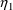
and
 . (During the Simulation Step, transgeneration of data items
is allowed. Transgenerated items are stored in
NONMEM’s internal copy of the data set.) Weights are
also simulated (normally distributed values with mean 70Kg
and standard deviation 7Kg if the option NORMAL is
used in the definition of the second random source).
WT also is a data item label, and so weights are
stored as transgenerated data items. Since weight is used in
subsequent computations in abbreviated code, the variable
WT is defined in the second section of generated
code, but as being equal to the weight in the data record
as that record appears when the second section of code is
executed. Since the subsequent computations should
involve transgenerated weight, WT is redefined
after the transgeneration, using the escape
character. Notice that weight is simulated only with the
first data record of the individual record, and that it is
stored as a transgenerated item only with this first data
record. Its value, though, may be needed in computations
during the Simulation Step with each of the data records of
the individual record. WGHT is a PRED-defined item,
not a data item label. Its value in all these data records
remains unchanged from the value to which it is set with the
first data record. So, WGHT is given the simulated
value, and with each data record, WT is redefined
to be this value, again using the escape character. Were
WGHT not used, the value of WT with any
data record other than the first record would be the data
item in that record.
. (During the Simulation Step, transgeneration of data items
is allowed. Transgenerated items are stored in
NONMEM’s internal copy of the data set.) Weights are
also simulated (normally distributed values with mean 70Kg
and standard deviation 7Kg if the option NORMAL is
used in the definition of the second random source).
WT also is a data item label, and so weights are
stored as transgenerated data items. Since weight is used in
subsequent computations in abbreviated code, the variable
WT is defined in the second section of generated
code, but as being equal to the weight in the data record
as that record appears when the second section of code is
executed. Since the subsequent computations should
involve transgenerated weight, WT is redefined
after the transgeneration, using the escape
character. Notice that weight is simulated only with the
first data record of the individual record, and that it is
stored as a transgenerated item only with this first data
record. Its value, though, may be needed in computations
during the Simulation Step with each of the data records of
the individual record. WGHT is a PRED-defined item,
not a data item label. Its value in all these data records
remains unchanged from the value to which it is set with the
first data record. So, WGHT is given the simulated
value, and with each data record, WT is redefined
to be this value, again using the escape character. Were
WGHT not used, the value of WT with any
data record other than the first record would be the data
item in that record.
This strategy works if only simulation is implemented (indeed, if the ONLYSIMULATION option is used in the $SIMULATION record). However, if data analysis is also implemented, then unless further steps are taken, a problem arises when the routine is called with a data record other than the first data record of an individual record. This is because the simulated weight value is only stored in the first data record. Here is another variation of the same verbatim code, achieving the identical effect, but also addressing this problem.
"FIRST " DOUBLE PRECISION R " IF (ICALL.EQ.4.AND.NEWIND.NE.2) THEN " CALL RANDOM (2,R) " WT=70+7*R " WGHT=WT " ENDIF " IF (ICALL.EQ.4) WT=WGHT "MAIN " IF (ICALL.EQ.4.AND.NEWIND.NE.2) THEN " 5 IF (ABS(ETA(2)).GT.5) THEN " CALL SIMETA (ETA) " GO TO 5 " ENDIF " ETAS1=ETA(1) " ETAS2=ETA(2) " ENDIF
Here weight is simulated immediately after the declarations, before the second section, and because of the replacement rule, it is stored in the data record. Therefore, when WT is redefined in the second section, it is given this value. This is true with the first data record of the individual record, and by virtue of the use of WGHT, it is also true with subsequent data records. However, in this variation the escape character does not need to precede WT with the statement WT=WGHT, since it is not the variable itself that needs to be redefined; that happens subsequently in the second section. Rather, the data item needs to be transgenerated, so that when the variable is redefined, the variable is defined to be the transgenerated value. As a result, with this variation, the transgeneration takes place with all data records, whereas with the previous variation the transgeneration only takes place with the first data record of the individual record.
Here is yet a simpler variation.
"FIRST " DOUBLE PRECISION R " IF (ICALL.EQ.4.AND.NEWIND.NE.2) THEN " CALL RANDOM (2,R) " ENDIF " IF (ICALL.EQ.4) WT=70+7*R "MAIN " IF (ICALL.EQ.4.AND.NEWIND.NE.2) THEN " 5 IF (ABS(ETA(2)).GT.5) THEN " CALL SIMETA (ETA) " GO TO 5 " ENDIF " ETAS1=ETA(1) " ETAS2=ETA(2) " ENDIF
(1) With NONMEM 7, the use of executable statements in the "FIRST section of verbatim code is deprecated. Chapter II section II.II.D describes how certain reserved variables (such as elements of the COM array) are declared as pointer variables, and then assigned to targets by executable statements. The FIRST block is inserted between the declarations and the executable statements, and should only have declarations. As an example, suppose the $PRED code is:
$PRED "FIRST "! first code here " COM(1)=1 Y=THETA(1)+ETA(1) The generated FSUBS contains: ... REAL(KIND=DPSIZE), POINTER :: DEN_,CDEN_(:)
! first code here
COM(1)=1
...
IF (ICALL <= 1) CALL ASSOCNMPRD4
Subroutine ASSOCNMPRD4 contains
COM=>VRBL
There is a segmentation violation with NONMEM 7, because COM(1) is used before it has been assigned to a target by subroutine ASSOCNMPRD4. This will happen in all blocks of abbreviated code, not just $PRED.
All the examples of verbatim code in the above section work correctly with NONMEM 7.4, but future changes to NONMEM could cause problems.
A better version of the last ("simpler") example follows, in which there is no executable code in the FIRST block.
"FIRST " DOUBLE PRECISION R "MAIN " IF (ICALL.EQ.4.AND.NEWIND.NE.2) THEN " CALL RANDOM (2,R) " ENDIF " IF (ICALL.EQ.4) WT=70+7*R " @WT=WT " IF (ICALL.EQ.4.AND.NEWIND.NE.2) THEN " 5 IF (ABS(ETA(2)).GT.5) THEN " CALL SIMETA (ETA) " GO TO 5 " ENDIF " ETAS1=ETA(1) " ETAS2=ETA(2) " ENDIF
Because of the replacement rule, only WT in the data file is simulated. The local variable WT was assigned before the MAIN block, and must be reassigned using
@WT=WT
(2) All the verbatim examples can be implemented using abbreviated code. For example,
IF (ICALL.EQ.4.AND.NEWIND.NE.2) THEN
CALL RANDOM (2,R)
ENDIF
IF (ICALL.EQ.4) WT=70+7*R
IF (ICALL.EQ.4.AND.NEWIND.NE.2) THEN
DOWHILE(ABS(ETA(2)).GT.5)
CALL SIMETA (ETA)
ENDDO
ETAS1=ETA(1)
ETAS2=ETA(2)
ENDIF
Each call to SIMETA replaces all the etas, so code similar the following is needed if bounds are put on two different etas:
IF (ICALL.EQ.4.AND.NEWIND.NE.2) THEN DOWHILE(ABS(ETA(2)).GT.5.OR.ABS(ETA(1)).GT.0.52) CALL SIMETA (ETA) ENDDO ETAS1=ETA(1) ETAS2=ETA(2) ENDIF
This section desribes some advanced techinques that can be used in abbreviated code.
In abbreviated code, an indicator variable is a variable whose value is 0 or 1. It may be identified with an input data item, or it may be a variable defined in the abbreviated code. Indicator variables are used to make a choice in a computation.
Random variables may be assigned using conditional statements. Suppose, for example, ICU is a variable which is either 0 or 1. The following code can be used:
(a) IF (ICU.EQ.0) THEN CLM=TVCLM+ETA(1) ELSE CLM=TVCLM+ETA(2) ENDIF
This can be coded unconditionally using ICU as an indicator variable:
(b) CLM=TVCLM+(1-ICU)*ETA(1)+ICU*ETA(2)
NM-TRAN implements (a) using PRED-defined indicator variables Q00... so that the assignment of CLM is in fact unconditional.
Indicator variables may be used explicitly to avoid the restriction that a random variable may not be defined in a nested IF. For example, example10.ctl (bayes10.exa) contains this code for simultaneous analysis of PK and categorical data, where TYPE is listed in $INPUT:
IF (TYPE.EQ.0) THEN ; PK Data
F_FLAG=0
Y=F+F*ERR(1) ; a prediction
ELSE
; Categorical data
F_FLAG=1
A=DEXP(EXPP)
B=1+A
Y=DV*A/B+(1-DV)/B ; a likelihood
ENDIF
ENDIF
The value of DV is 0 or 1 and is used as an indicator variable to avoid assigning Y in a nested IF, which is not permitted:
IF (TYPE.EQ.0) THEN ... ELSE ... IF (DV==1) Y=A/B IF (DV==0) Y=1/B ENDIF
Random variables may be redefined, and may appear on the right-hand side of conditional assignment statements. They may be used recursively in their own redefinition. If a random variable is defined by "incomplete" conditionals (i.e., conditionals which do not include both true and false cases), and all tests fail, the random variable has the value zero. This is a major difference between random and non-random variables. Consider these examples:
IF (WT.GT.0) K=WT*THETA(1)*EXP(ETA(1)) IF (WT.GT.0) TVV=WT*THETA(1)
If WT is <= 0, K is zero. NM-TRAN prints a warning message when it detects such code.
If WT is <= 0, TVV retains its prior value, which may have been computed with a previous event record. When a COM(i) variable is defined by incomplete conditional statements and all tests fail, the variable retains its value (as do all non-random variables).
In $PK, $ERROR, and $PRED records, recursion code may be used in an explicit manner, as in this example:
IF (WT.GT.0) THEN
K=THETA(1)*WT*EXP(ETA(1))
ELSE
K=K
ENDIF
If the condition is false, K retains its value set with the previous data record.
Recursion code can be used in $PRED, $PK, and $ERROR records for other purposes as well, e.g., to implement recursive kinetics in $PRED, and to compute the sum of a random variable in a DOWHILE block. The following two fragments of code illustrate how one can use abbreviated code to implement recursive kinetics in $PRED. The first example works with a single bolus dose and the second example works with single or multiple bolus doses. Similar code can be used in $PK and $ERROR.
K=THETA(1)*EXP(ETA(1))
IF (TIME.EQ.0) THEN
OLDA=AMT
T=TIME
ENDIF
A=OLDA*EXP(-K*(TIME-T))
OLDA=A
T=TIME
K=THETA(1)*EXP(ETA(1))
IF (TIME.EQ.0) THEN
A=AMT
T=TIME
ELSE
A=A*EXP(-K*(TIME-T))+AMT
ENDIF
T=TIME
The above forms of recursion work for recursion from one data record to the next ("inter-record" recursion). It is also possible to use recursion in a do-while loop ("intra-record", or "do-while" recursion).
Example of a do-while recursive loop using a random variable:
TERM=THETA(1)*EXP(ETA(1)) SUM=0 DO WHILE(condition) SUM=SUM+TERM ... ENDDO
A product loop such as
PROD=PROD*TERM
is also possible, as are other ways the dowhile recursive variable can be used, so long as the variable appears on both sides of the equal sign within the DOWHILE loop: V= ... V ...
The NONMEM utility routine PASS can be used to read and/or to modify ("transgenerate") data records. This can be done at ICALL 0 (run initialization), 1 (problem initialization) and/or 3 (problem and run finalization). Repeated calls ("CALL PASS") are used to pass through the data set. Data record items are referred to by the name they are given on the $INPUT record. NONMEM data items ID and MDV may not be transgenerated. Any other data item (including DV) may be transgenerated. Additional data items can be generated at both the beginning and ending of a problem. Since the finalization call actually occurs before the Table and Scatterplot Steps, new data items generated at this call can be tabled and scatterplotted. This is described in NONMEM Users’s Guide Part II, D.2.2. See also Guide VI, Chapter VI. See Section J.3, below, for abbreviated code.
Each call to PASS obtains the next data record, so the values of data items change with each call to PASS. Only those PRED-defined items that are displayed in tables or scatters will have values appropriate to the current record; a PRED-defined item that is listed in NMPRD4 but is not displayed will always have the value from the first data record. NEWIND and ETA values change to those appropriate to the current record. Some of the reserved right-hand variables described above also change value, as noted.
The DOWHILE statement may be
used for loops in abbreviated code.
An example is given above that uses DOWHILE during
simulation. During data anaysis (with ICALL=2), code such as
this can be used:
$ABBR DECLARE DOWHILE ILOOP $PRED ILOOP=1 DOWHILE (condition) .. statements .. ILOOP=ILOOP+1 ENDDO
A random variable may be computed recursively in such a loop.
Transgeneration examples
Section D.2 describes the use of NONMEM’s PASS Utility to modify (transgenerate) the NONMEM data set at initialization / finalization calls to PRED. Here is an example of abbreviated code that can be used with NONMEM V:
IF (ICALL.EQ.0) THEN MODE=0 CALL PASS (MODE) MODE=2 CALL PASS (MODE) DO WHILE (MODE.EQ.2) ... transgeneration statements ... CALL PASS (MODE) ENDDO
ENDIF
With NONMEM VI, the DOWHILE (DATA) abbreviated code statement facilitates this feature by supplying all the needed code to pass through the data set.
IF (ICALL==0) THEN DOWHILE (DATA) ... transgeneration statements ... ENDDO
ENDIF
Here is fragment of code for modelling auto-correlation. NO is a reserved variable giving the maximum number of observations per individual record; it can be used only in the context of the $ABBREVIATED DECLARE record. CORRL2 is a reserved variable for modelling correlation across residual variables.
$ABBR DECLARE T(NO)
$ABBR DECLARE DOWHILE J
$ABBR DECLARE INTEGER I
...
$PRED (or $ERROR) IF(NEWIND.NE.2) I=0
IF(MDV.EQ.0)THEN
I=I+1
T(I)=TIME
J=1
DO WHILE (J<=I)
CORRL2(J,1)=EXP(-THETA(4)*(TIME-T(J)))
J=J+1
ENDDO
ENDIF
Here is an example of MU modelling:
MU_2=THETA(4) CL=MU_2+ETA(2)
Variables MU_i are reserved. The
new NONMEM 7 EM (Expectation Maximization) methods and Gibbs
sampling methods are most efficiently implemented if the
user supplies information on how the THETA parameters are
associated arithmetically with the ETAs and individual
parameters, wherever such a relationship holds. Calling the
individual parameters phi, the relationship should be
phi_i=mu_i(theta)+eta(i)
for each parameter i that has an eta associated with it, and
mu_i is a function of THETA. The association of one or more
THETA’s with ETA(1) must be identified by a variable
called MU_1. Similarly, the association with ETA(2) is MU_2,
that of ETA(5) is MU_5, etcetera. This is called MU
Referencing or MU Modelling.
MU_i should be assigned unconditionally, using indicator variables if necessary. E.g., suppose GENDR is 0 for males, 1 for females, and LCLM=log transformed clearance, male, etc.
A model for the mean of phi_1 could be:
MU_1=(1.0-GNDR)*(LCLM+LAGE*CLAM) + GNDR*(LCLF+LAGE*CLAF)
(See Bayes Example 2.)
Another example is with a mixture model, where Q=1 for MIXNUM=1 and Q=0 for MIXNUM=2 (See Bayes Example 5).
MU_2=Q*THETA(2)+(1.0-Q)*THETA(3)
Option CHECKMU of the $ABBREVIATED requests that MU model statements be checked, and is the default. Option NOCHECKMU can be used to prevent NM-TRAN from attempting to check the MU model statements.
Identical to the $INCLUDE record (Chapter III B.20). May be used in a block of abbreviated code to read records from a different file.
An include file nonmem_reserved_general may be found in the util directory of the NONMEM installation (nm73). It contains declarations for variables in MODULEs that can be used on the right or left in abbreviated code. It also has definitions of functions that may be useful. See also useful_variables.pdf in the guides directory for a listing of such variables. This file is used in examples/example8.ctl, in which NONMEM variables BAYES_EXTRA and ITER_REPORT are used. Some of the other variables defined in nonmem_reserved_general include:
MDVI1, MDVI2, MDVI3 (modifies
NONMEM’s treatment of "non-impact" records
with MDV>=100).
PI
With NONMEM 7.4, a versions of the functions are available that protect against domain violations, divide by zero, and floating point overflows. The protect functions are as follows.
For all routines, if X=not a number, X is converted to machine precision value, which is about 1.0E-15, before performing an operation on it. If X>INFNTY (where INFNTY is approximately 1.0E+154), then X is converted to INFNTY before an operation is performed on it.
|
PLOG(x) |
Returns LOG of x. If x<SMALLZ, where SMALLZ is approximately 2.8E-103, then LOG(SMALLZ) is returned.
|
PLOG10(x) |
Returns LOG10 of x. If x<SMALLZ, where SMALLZ is approximately 2.8E-103, then LOG10(SMALLZ) is returned.
|
PSQRT(x) |
Returns SQRT of x. If x=0.0d+00, then 0 is returned.
|
PEXP(x) |
Returns EXP of x. If x>40.0, then PEXP(100.0) is returned (avoids overflow).
|
PDZ(x) |
Returns 1/x . Protects against divide by zero. If abs(x)<SMALLZ, then 1/SMALLZ is returned.
|
PZR(x) |
Returns x . protects against zero. If abs(x)<SMALLZ, then SMALLZ is returned.
|
PNP(x) |
Returns x. Protects against non-positive. If X<SMALLZ, then SMALLZ is returned.
|
PHE(x) |
Returns x. Protects against high exponent. If X>100, then 100 is returned. Thus PEXP(x)=EXP(PHE(x)).
|
PNG(x) |
Returns x. Protects against negative. If X<0.0, then 0.0 is returned.
|
PTAN(x) |
Returns tan(x). Protects against returning infinity on inputs near pi/2.
|
PATAN(x) |
Returns atan(x). Protects against large intputs.
|
PACOS, PASIN |
Returns acos(x), asin(x), respectively. If |X| is between 1.0 and 1+10**(-08), then x is submitted as 1 or -1. So, "dirty ones" are cleaned up, but values clearly beyond 1 are allowed to trip up the function, so the user is aware of the logical error in the code, and fix the issue.
In addition, there are first derivative (such as PLOGD1), and second derivative (such as PLOGD2) companion routines available which NONMEM uses for analytical derivatives.
If the record
$ABBREVIATED PROTECT
is present, NM-TRAN will automatically replace all LOG (or
DLOG) with PLOG, EXP (or DEXP) with PEXP, SQRT (or DSQRT)
with PSQRT, / operations with *PDZ(), and B**E operations
with PEXP(E*PLOG(B)). When you use $ABBR PROTECT, you will
find a considerable improvement in estimation stability,
regardless of estimation method used. Alternately, P
versions can be coded explicitly in abbreviated code.
The source code of these routines are available in ..\source\PROTECT.f90. If you wish to modify their behavior, then copy PROTECT.f90 to your run directory, rname and modify it, such as PROTECTB.f90, then refer to this modified code with
$SUBROUTINES OTHER=PROTECTB.f90
With NONMEM 7.4, A user-defined function may be declared as follows:
$ABBR FUNCTION function_name(input_vector_name,dimension,usage)
|
function_name |
is the name of the function. As
with reserved functions FUNCA etc., the code for the
function must be written by the user in FORTRAN.
(See Guide VIII ABBREVIATED FUNCTION Help Item.)
The code must be in a file included using the $SUBROUTINE
OTHER option, as discussed in Chapter III.B.6.
|
input_vector_name |
is the name of an input vector that may be used to pass arguments to the function.
|
dimension |
specifies how many input arguments function_name will use, and defines input_vector_name as a vector with this length. "Dimension" is a property of both the function and of the input vector.
|
usage |
is the maximum number of times the function may appear in the abbreviated code, that is, the maximum number of occurances of function_name. It is not an error if there are fewer occurances. If usage is omitted, NMTRAN will supply the exact number. If usage is coded, NMTRAN will generate an error message if function_name appears in abbreviated code more than "usage" number of times. |
Note that a given function may be used with other input vectors, and a given vector may be used with other functions.
A user-defined vector also may be declared as follows:
$ABBR VECTOR input_vector_name (dimension)
|
input_vector_name |
is the name of an input vector.
|
dimension |
Specifies the length of the vector. The dimension of a vector should be no less than the dimension of all the functions which which it is used.
A vector and its length may be declared independently of a function, and vice-versa. The asterisk may be used as a place holder, e.g.,
$ABBR FUNCTION BIVARIATE(*,5) ; when BIVARIATE is called, NDIM will be 5
Here is an example.
$ABBR FUNCTION BIVARIATE(VBI,5,3)
A vector VBI is defined of length 5. There is a function called BIVARIATE. When BIVARIATE is used, the value 5 is passed to it as argument NDIM. BIVARIATE uses 5 elements from the input vector. Function BIVARIATE may appear in abbreviated code at most 3 times.
$MIX
the abbreviated code
Optional. This record gives an abbreviated code for the MIX subroutine. If it appears, it must be with the first problem specification, and only with this problem specification. The use of $MIX is independent of the choice of $PRED vs. PREDPP. When MIX is called, the first data record of the individual record is stored in TEMPLT. General rules for abbreviated code are described above. Specific rules for $MIX are described in NONMEM Users Guide VIII and on-line help. Reserved variables MIXP, MIXNUM, MIXEST are described above.
Required left-hand variables are NSPOP, the number of sub-populations, and P(i) where for each i (i=1, ... , NSPOP), P(i) is the modeled fraction of the population in the ith subpopulation.
Elements of the data record can be accessed; see $CONTR and the DATA array. Variables defined in $MIX are not listed in MODULE NMPRD4 and may not be displayed in $TABLE and $SCATTER. Variables from PRINFN (from PREDPP $INFN block) and DEFINEDVARIABLES (from $ABBR DECLARE control record) are not defined in $MIX abbreviated code.
$THETAI
the abbreviated code
Optional. This record gives an abbreviated code for the THETAISUB subroutine, which transforms the initial values in the $THETA and $THETAP records. If the initial estimate for an element of theta is transformed, so is the upper and lower bounds for that theta, if any. The record name may also be coded as $THI. If it appears, it must be with the first problem specification, and only with this problem specification. The use of $THETAI is independent of the choice of $PRED vs. PREDPP. Specific rules for $THETAI are described in Introduction to NONMEM 7 and Guide VIII and on-line help.
$THETAR
the abbreviated code
Optional. This record gives an abbreviated code for the THETARSUB subroutine, which transforms the final theta values for the NONMEM report and additional output files. The record name may also be coded as $THR. The use of $THETAR is independent of the choice of $PRED vs. PREDPP. Specific rules for $THETAR are described in Introduction to NONMEM 7 and Guide VIII and on-line help.
TOP
TABLE OF CONTENTS
NEXT CHAPTER ...